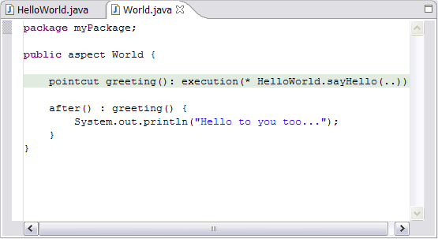
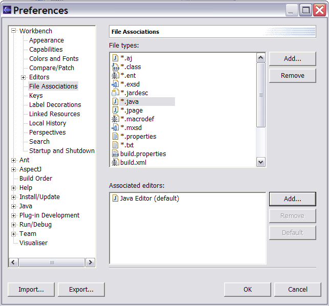
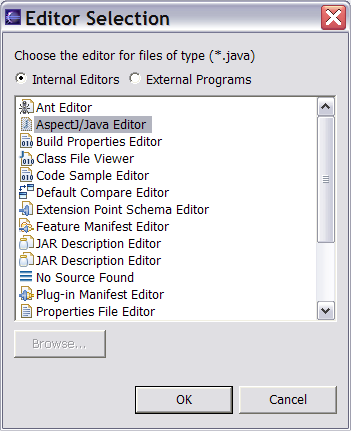
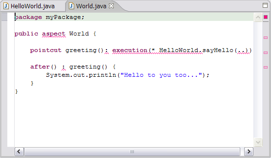

Copyright © 2004 Eclipse.org.
All Rights Reserved
The fixes
to problems 1-5 should be automated by the new installation process in
AJDT 1.1.4 and later, but in case you still see any of them, here are the
fixes:
If your
editor looks like this when displaying aspects:

Then you’re
using the Java editor instead of the AspectJ editor. Close the editor, then go to Window -> Preferences -> Workbench ->
File Associations. Select “*.java” and then click “Add…” next to the Associated
Editors box.

The
following dialog appears:

Select “AspectJ/Java
Editor” and click OK. Then press the “Default” button to make this the default
editor for “*.java” files.
If your
editor is highlighting the aspect keyword as an error with a
red squiggle like this:

Then you still
have early error annotations turned on. Go to Window -> Preferences ->
Java -> Editor. Click on the
“Annotations” tab and then deselect “Analyse annotations while typing.” Click
“Apply” and then “OK.”
If you get
unused import warnings for imports that are used in your aspects, go to Window
-> Preferences -> Java -> Compiler and set the “Unused Imports”
severity level to ignore. (The analysis engine for unused imports doesn’t
understand aspects yet).
The build
button only appears in the Java perspective. If the AspectJ build button
doesn’t appear in the Java Perspective, first switch to that perspective and
then go to Window -> Customize Perspective. In the resulting dialog go to
the "Commands" tab, select “AspectJ Actions” in the list of available
command groups and click “OK.”
If you
don’t see a new aspect icon in the list of “new” shortcuts then go to the Java
Perspective and select customize perspective as above. In the resulting Customize Perspective dialog,
go to the "Shortcuts" tab, select the "New" submenu and check the items you want
to see.
If you need
to rename your aspect to have a ".aj" extension instead of ".java", first open the resource
perspective. Right click on the aspect in the Navigator, click "Rename", then
type in the new name and press return. Since 1.2.0 M1 AJDT has provided a shortcut for
renaming file extensions. Right click on the file, click "Convert file extension to .aj"
(or "Convert file extension to .java" for .aj files.) This can also be done for an entire
project by right clicking on the project then clicking "Convert file extensions..."
and selecting the required option.
This problem, seen in the 1.2.0 stream, is
a side effect of contributing AspectJ information to the JDT model. A filter is provided to
hide the second copy. In the package explorer select "Filters..." from the drop down menu and
check the ".aj resource filter" checkbox in the filters dialog.